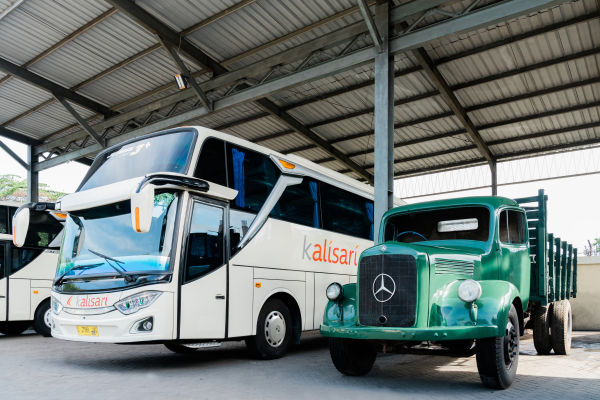
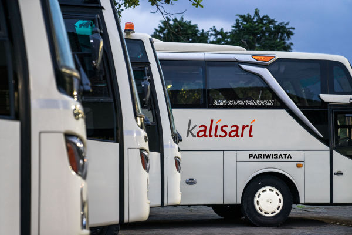
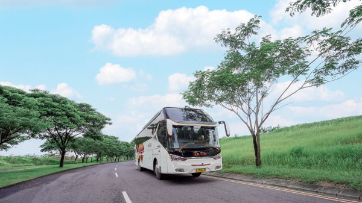
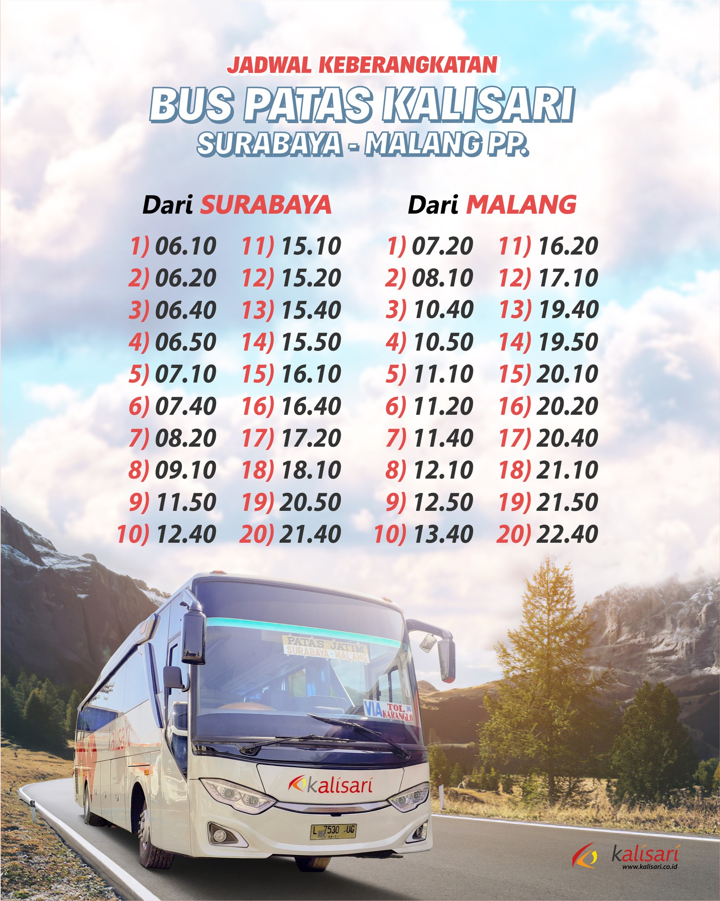
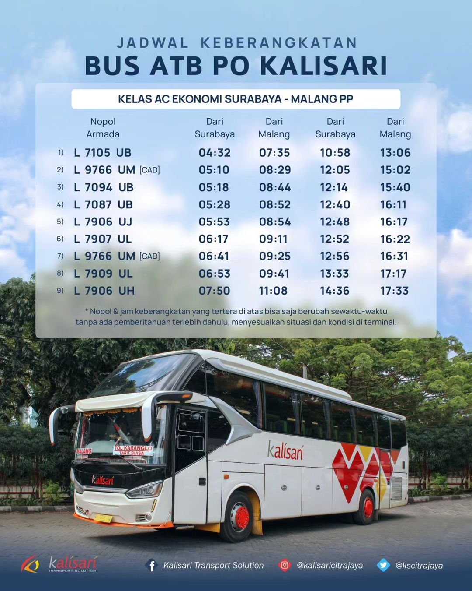
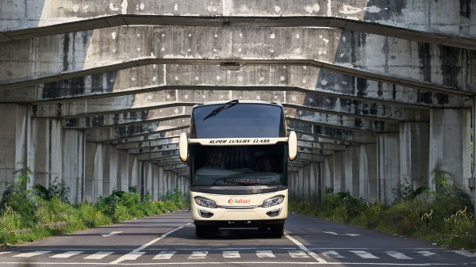
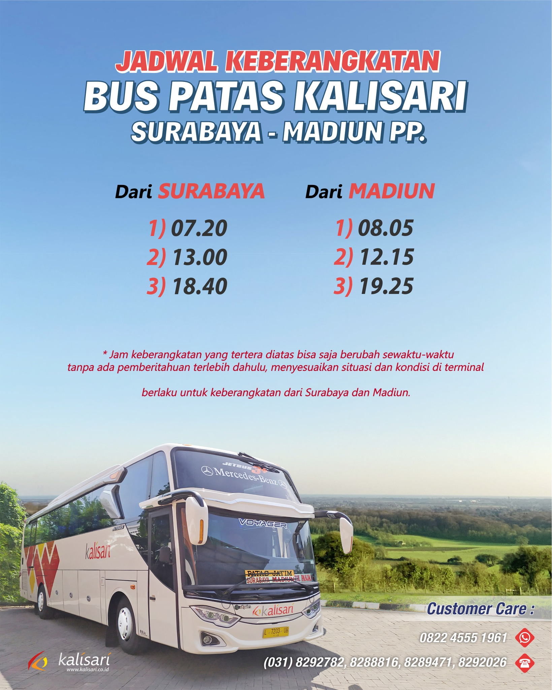

Sejarah Perusahaan

Berdiri sejak 1 September 1961, PT. Kalisari Citra Jaya (d.h. Perusahaan Otobus Kalisari) yang
terletak di Jalan A. Yani nomor 258 Surabaya, merupakan perusahaan penyedia layanan jasa
transportasi yang telah lama terpercaya dikalangan masyarakat Jawa Timur, khususnya wilayah Surabaya
dan sekitarnya.
Kami berkomitmen untuk meningkatkan kepuasan kepada pelanggan melalui dukungan tim manajemen dan
operasional beserta kru yang berpengalaman, solid dan tanggap terhadap tuntutan perkembangan zaman.
Seiring dengan pesatnya kemajuan teknologi dan tuntutan selera pasar, saat ini kami juga melayani
angkutan umum AKDP (Antar Kota Dalam Propinsi), Angkutan Antar-Jemput Khusus Karyawan serta charter
armada pariwisata (big bus, medium bus dan minibus) untuk keperluan khusus atau event-event
tertentu. Selain itu, kami menyediakan layanan persewaan kendaraan secara penuh dalam jangka waktu
tertentu.
Pariwisata

PT. Kalisari Citra Jaya memiliki armada Bus Pariwisata yang selalu melakukan inovasi dari tahun ke
tahun. Ada banyak pilihan kelas Bus Pariwisata yang kami sediakan untuk memenuhi kebutuhan dan
selera Anda. Lingkup wilayah pariwisata yang dapat kami layani adalah Sumatera - Jawa - Madura -
Bali - Lombok.
Ada beberapa Pilihan untuk armada pariwisata kami :
1. Big bus 59, 47 seat dan juga bisa request sesuai kebutuhan
2. Medium bus 35-29 seat dan juga bisa request sesuai kebutuhan
3. Toyota Hiace 15 seat dan juga bisa request sesuai kebutuhan
Rute Reguler AKDP
Bus PT. Kalisari Citra Mandiri memiliki trayek bus AKDP(Antar Kota Dalam Provinsi) untuk trayek
Patas dan Ekonomi Surabaya-Malang PP dan Patas Surabaya-Madiun PP. beroperasi 24 jam melalui jalur
yang sudah ditentukan contact Bus untuk pemesanan bisa melalui online travel agent atau bayar
langsung diatas bus
Surabaya Malang PP.

Untuk rute Surabaya-Malang PP PO. Kalisari melayani dua kelas yaitu Ekonomi dan Patas dengan tarif Rp. 20000 untuk kelas ekonomi dan Rp 35000-40000 untuk kelas patas
Jadwal Keberangkatan


Surabaya Madiun PP.

Untuk rute Surabaya-Madiun PP PO. Kalisari melayani rute tersebut dengan kelas Patas setiap hari dengan tarif Rp. 80000
Jadwal Keberangkatan
